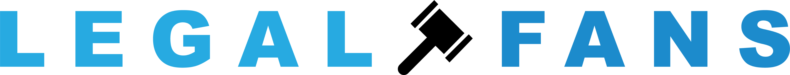
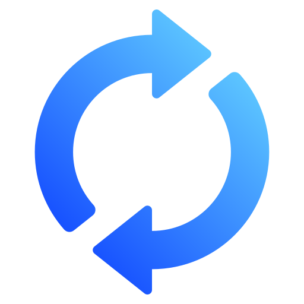

Go to My Account
Devin Walker (@u377260716)
Logout
Welcome to

Connect account or Sign up
Last Synchronisation
Monday 12 June, 2025
Synchronisation in Progress
Synchronisation In-Progress
(Make sure to not close OnlyFans while we are syncing the content)
Congratulations
Synchronisation Successful

Connect / Sign up
Start Scan Now
Close Extension
% Complete
% Complete